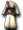

原野
盧亞斯森
米魯里斯森
斯歐米森
魔界村森
魯克西翁森
艾德安德周邊
卡雷瓦拉森
伊卡洛斯周邊
萊比亞周邊
【魯克西翁森】１｜２｜３｜４｜５｜６
※各怪物的編輯請由標題的鉛筆圖示進行。掉落物品的編輯也可以從掉落物品欄的
出現怪物
泰諾爾
札德
［扎德］
 ［扎斯特］
［扎斯特］
［迪斯凱帝］
 迪斯 迪斯 | Lv | AC | MC | AAR | SAR | 掉落物品 |
| HP:176 | 10 | 80 | 40 | 20 | -10 |  [3]迪斯變身捲軸、未鑑定銅劍、格里亞戒指、附魔狼牙棒、劍士皮甲、 [3]迪斯變身捲軸、未鑑定銅劍、格里亞戒指、附魔狼牙棒、劍士皮甲、 女先行服、 火之護符 火之護符 |
| 經驗值 | 名聲值 | 金錢 | 攻擊屬性 | 防禦屬性 | ||
| 70(28) | 0 | 35 | 無 | 土 | ||
| STR | DEX | INT | WIS | CON | ||
| 3 | 3 | 3 | 3 | 3 |
備註
 迪斯特 迪斯特 | Lv | AC | MC | AAR | SAR | 掉落物品 |
| HP:560 | 25 | 50 | 20 | 20 | -10 | 赫利羅處方、 迪斯眼球、附魔暗淡魔石、[15]迪斯凱帝變身捲軸 迪斯眼球、附魔暗淡魔石、[15]迪斯凱帝變身捲軸 |
| 經驗值 | 名聲值 | 金錢 | 攻擊屬性 | 防禦屬性 | ||
| 200(29) | 0 | 100 | 無 | 土 | ||
| STR | DEX | INT | WIS | CON | ||
| 3 | 5 | 5 | 5 | 5 |
備註
| 達伊特 | Lv | AC | MC | AAR | SAR | 掉落物品 |
| HP:320 | 17 | 60 | 20 | 20 | -10 | [3]迪斯變身捲軸、斬擊、附魔執事之袍、魯奎德魔石、附魔女先行服、掉落戒指 |
| 經驗值 | 名聲值 | 金錢 | 攻擊屬性 | 防禦屬性 | ||
| 120(29) | 0 | 50 | 無 | 土 | ||
| STR | DEX | INT | WIS | CON | ||
| 3 | 3 | 3 | 3 | 3 |
備註
泰諾爾
| 泰諾爾 | Lv | AC | MC | AAR | SAR | 掉落物品 |
| HP:880 | 35 | 40 | 10 | 20 | -10 | 迪斯眼珠 |
| 經驗值 | 名聲值 | 金錢 | 攻擊屬性 | 防禦屬性 | ||
| - | 0 | 180 | 無 | 土 | ||
| STR | DEX | INT | WIS | CON | ||
| 3 | 10 | 10 | 10 | 10 |
備註
札德
| 札德 | Lv | AC | MC | AAR | SAR | 掉落物品 |
| HP:880 | 35 | 40 | 10 | 20 | -10 | 魔法皮帶、附魔英雄皮甲、先行服、附魔女偵察服、附魔幸運之眼(雙手)、附魔月光之槍(雙手)、附魔康加鼓、 貝斯吉他、曼陀林、斯威布雙重奏 貝斯吉他、曼陀林、斯威布雙重奏 |
| 經驗值 | 名聲值 | 金錢 | 攻擊屬性 | 防禦屬性 | ||
| 300 | 0 | 180 | 無 | 土 | ||
| STR | DEX | INT | WIS | CON | ||
| 3 | 10 | 10 | 10 | 10 |
備註
［扎德］
| ［扎德］ | Lv | AC | MC | AAR | SAR | 掉落物品 |
| HP:2640 | 35 | 70 | 55 | 20 | -10 | 先行服 |
| 經驗值 | 名聲值 | 金錢 | 攻擊屬性 | 防禦屬性 | ||
| 300 | 0 | 180 | 無 | 土 | ||
| STR | DEX | INT | WIS | CON | ||
| 3 | 10 | 10 | 10 | 10 |
備註
| 札斯特 | Lv | AC | MC | AAR | SAR | 掉落物品 |
| HP:2000 | 45 | 20 | 0 | 20 | -10 | 迪斯眼球、[15]迪斯凱帝變身捲軸、卡波耶拉修特、附魔比尼亞里拉 |
| 經驗值 | 名聲值 | 金錢 | 攻擊屬性 | 防禦屬性 | ||
| 700 | 0 | 260 | 無 | 土 | ||
| STR | DEX | INT | WIS | CON | ||
| 5 | 20 | 20 | 20 | 20 |
備註
［扎斯特］
| ［扎斯特］ | Lv | AC | MC | AAR | SAR | 掉落物品 |
| HP:6000 | 45 | 60 | 50 | 20 | -10 | |
| 經驗值 | 名聲值 | 金錢 | 攻擊屬性 | 防禦屬性 | ||
| 700 | 0 | 260 | 無 | 土 | ||
| STR | DEX | INT | WIS | CON | ||
| 5 | 20 | 20 | 20 | 20 |
備註
| 迪斯凱帝 | Lv | AC | MC | AAR | SAR | 掉落物品 |
| HP:3360 | 50 | 10 | 0 | 20 | -10 | [15]迪斯凱帝變身捲軸、未鑑定附魔卡奇匕首、未鑑定附魔卡伊拳套、附魔阿奇拉魔石、未鑑定防禦者塔爾加、迪斯眼球、附魔領主之杖、附魔巴雅鼓、附魔托斯鼓、附魔地之吉他(雙手)、貝斯阿爾派因、波卡長袍、提斯特之刃 |
| 經驗值 | 名聲值 | 金錢 | 攻擊屬性 | 防禦屬性 | ||
| 1000 | 300 | 300 | 無 | 土 | ||
| STR | DEX | INT | WIS | CON | ||
| 7 | 25 | 25 | 25 | 25 |
 攻擊、支援、○、確認
攻擊、支援、○、確認
［迪斯凱帝］
| ［迪斯凱帝］ | Lv | AC | MC | AAR | SAR | 掉落物品 |
| HP:10080 | 50 | 55 | 50 | 20 | -10 | 迪斯眼球、附魔巴雅鼓、 女劍俠胸甲、刺劍雙重奏 女劍俠胸甲、刺劍雙重奏 |
| 經驗值 | 名聲值 | 金錢 | 攻擊屬性 | 防禦屬性 | ||
| 3000 | 900 | 300 | 無 | 土 | ||
| STR | DEX | INT | WIS | CON | ||
| 7 | 25 | 25 | 25 | 25 |
攻擊、支援、○、確認
| 安迪爾斯獨眼怪 | Lv | AC | MC | AAR | SAR | 掉落物品 |
| HP:2310 | 45 | 20 | 0 | 20 | -10 | [42]安迪亞斯獨眼怪變身捲軸、長靴、巴澤爾、魔法腰帶、屬性確認、海盜村[全體]、魔窟 |
| 經驗值 | 名聲值 | 金錢 | 攻擊屬性 | 防禦屬性 | ||
| 700 | 80 | 260 | 無 | 無 | ||
| STR | DEX | INT | WIS | CON | ||
| 5 | 20 | 20 | 20 | 20 |
安蒂亞斯閃電
編輯寶箱（淺茶）
| 寶箱（淺茶） | Lv | AC | MC | AAR | SAR |
| HP:1473 | 1 | 58 | 40 | -60 | -100 |
| 經驗值 | 名聲值 | 金錢 | 攻擊屬性 | 防禦屬性 | |
| 1 | 100 | 15 | 無 | 無 | |
| STR | DEX | INT | WIS | CON | |
| 3 | 3 | 3 | 200 | 200 |
備註
掉落物品
古代捲軸、詛咒捲軸、祝福捲軸、海市蜃樓地圖、童話車票[艾莉絲區]、童話車票[格烈佛區]、童話車票[胡桃鉗區]、童話車票[石化區]、海盜要塞入場券、茄子、酸蘋果、魔力之泉、混合藥水、鎮靜劑、解毒劑、移動輔助藥、強力打擊、屬性確認、內特瑪那、火焰碎片、冰槍術、雷球術、救援術、超級治癒、下劈踢、未鑑定庫巴拳套、未鑑定助祭杖、未鑑定斯瓦德劍、神佑女魔導士之袍、未鑑定魔法羅馬圓盾、黃金鐲、火之戒指、風之戒指、水之戒指、阿斯戒指、尼爾戒指、泥土護符、鞋子、吊襪帶